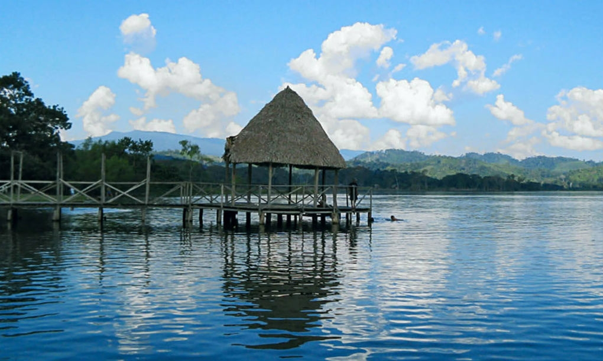

Fecha de Publicación: 15 de marzo 2017 - Sauce - Tarapoto / San Martin / Perú
card-image  La Laguna del Sauce, o popularmente conocida como Laguna Azul, está ubicada en el distrito de Sauce, en el departamento de San Martín, a casi 900 metros sobre el nivel del mar. Se le denomina así porque los días de cielo despejado, éste se refleja sobre el agua, dotándola de un color azul brillante. Aparte de contemplar el bello paisaje que ofrece esta laguna, los turistas pueden practicar deportes de aventura como moto acuática o sky acuático, además de paseos en canoas o botes a motor. La pesca deportiva también está permitida. Leyenda del Sauce Cuentan que muchísimos años atrás llegaron a la región unos hombres muy ancianos y enfermos, quienes eran además magos y hechiceros. Ellos poblaron el lugar denominado hoy Machungo. En quechua “Machu” significa: “viejo”, y “Hungo” significa: “enfermedad”. Estos ancianos murieron de reumatismo en las rodillas y otras enfermedades, por lo cual el lugar que fundaron hoy se lo conoce como “El pueblo de los ancianos enfermos”. Sus descendientes en el afán de cazar animales comenzaron a moverse por la región hasta llegar a la misteriosa Laguna de Sauce. La laguna, al ver llegar a estos hombres pintados y barbudos, se ponía muy brava y provocaba ruidosas olas, desde sus profundidades emergían àrboles gigantes, como los Renacos, Ojes y Sauces. Los hombres optaron por invocar a sus ancestros, los magos ancianos, y también se contactaron con brujos contemporáneos a ellos Éstos, derramando sangre de una mujer recién dada a luz, llegaron a dominar la laguna, logrando que esta se calme y pueda ser navegable. Lo cual permitió que estos hombres puedan vivir de la caza y la pesca y echar raíces en ese sitio. Y fundar lo que hoy se denomina el pueblo de Sauce, junto a la Laguna Azul..
Gastón Acurio Jaramillo (Lima, 30 de octubre de 1967) es un chef, escritor, hombre de negocios y promotor de la gastronomía peruana. Desde la inauguración de su restaurante Astrid & Gastón en 1994 en Lima, Acurio ha abierto 34 restaurantes dedicados a diferentes especialidades de la comida peruana, en 11 países alrededor del mundo. En el 2007 Acurio fundó la Escuela de Cocina de Pachacútec,2 dedicada a formar como cocineros y mozos a jóvenes pandilleros. Durante el 2015 anuncia también un proyecto conjunto con la Pontificia Universidad Católica de Perú de educación gastronómica. Hoy Acurio lidera una compañía con más de 3,000 empleados, presente en 13 ciudades distintas con 11 conceptos y marcas